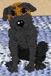

z
Welcome to page 2 of my litterz. As with the previous page, if you would like to adopt one of my puppies or an entire litter, email me at lilmisschrissy9@hotmail.com.
missing:
photo
missing:
Chocolate photo
This is chocolate, He is a mix between a jack russell, a labrador, a dachshund and a scottie.
missing:
Noodle photo
This is noodle, she is a mix between a jack russell, a labrador, a dachshund and a scottie.
missing:
Apple photo
This is apple, she is a mix between a labrador, a jack russell, a dachshund and a scottie
missing:
Cola photo
This is cola, she is from the same litter as apple, she is a mix between a jack russell, a labrador, a dachshund, and a scottie.
missing:
Ben photo
missing:
Bindi photo
This is Ben the labrador and bindi the jack russell They are great-grandparents of this litter

missing:
Daisy photo
This is Chuckie, the son of Ben and Bindi, and Daisy the Dachshund. They are the grandparents of this litter
missing:
Jimmy photo
missing:
Maisie photo
This is Jimmy the son of Chuckie and Daisy and Maisie, the scottie, they are the parents of both of these litterz
missing:
Tommy photo
This is tommy he is a cocker spaniel puppy. To adopt Tommy you will need the cocker spaniel breed files which are available here

These are tommy's parents, they are both cocker spaniels. Flippy is the mother (black and white) and Fudge is the father (goldren) Tommy is their first puppy.
Flippy and fudge also have three newborn puppies on my new litterz page.
Your name
Name of puppy/puppies
Why you would like the puppy (optional)
If the form submit button dosen't work, please email me by clicking on the link below
Email: lilmisschrissy9@hotmail.com
missing:
Neopets banner